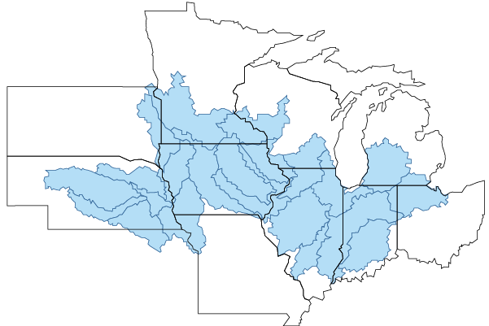
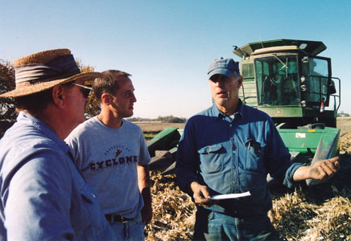

Social and Economic Research
This project's social and economic research is focused on economic assessment of corn-based cropping systems and gaining knowledge of farmer beliefs and concerns about climate change, their attitudes toward adaptative and mitigative strategies and practices, and what support farmers need to make decisions. These research findings and participation in this project by farmers in the upper Midwest provide feedback for project scientists conducting field trials, analysis and modeling. Social and economic research findings will also form the framework for developing tools for farmer decision-making, education curricula and science-based policies..


J. Arbuckle, Iowa State University, discusses farmer survey results regarding climate change with Kansas State University Extension. ©Bartelt
Dan Barker, Iowa State University, discusses research findings with area farmers at a field-based meeting.
Chad Ingels, Iowa State University, discusses research findings with area farmers at a field-based meeting.
Summer meeting attended by local farmers at a research site.
Chad Ingels, Iowa State University, discusses nitrogen sampling techniques with a farmer.
Farmer Survey
Social research conducted to-date includes a survey of farmers, to assess participants' capacity and willingness to adopt management practices and strategies that lead to long-term sustainability and productivity of corn-based cropping systems under variable weather and long-term climate changes.
Project researchers worked with the USDA-supported Useful to Usable (U2U) Climate project based at Purdue University to survey nearly 20,000 farmers in 22 HUC6 watersheds across 10 Corn Belt states.

The survey featured an innovative approach, exemplified through the following:
- The survey uses the watershed as the sampling unit, which to our knowledge has never been done at this scale.
- Because the National Agricultural Statistics Service is conducting the survey assessment, they will be able to populate the data set with data from the U.S. Census of Agriculture. This will be the first survey ever conducted that will be able to link complex attitudinal measures with the detailed agricultural enterprise data from the Census of Agriculture.
The Census of Agriculture, taken every five years, is a complete count of U.S. farms and ranches and the people who operate them. The Census looks at land use and ownership, operator characteristics, production practices, income and expenditures, and many other areas. It is the only source of uniform, comprehensive agricultural data for every county in the nation.
Farmer Interviews
Farmer interviews are also being utilized for this project. University extension educators will use in-depth interviews with 200+ farmers to gather data and foster educational opportunities to increase farmer knowledge and inspire learning about connections between management practices, climate variability, soil erosion, nutrient runoff, and atmospheric, economic and environmental impacts.
Investigators and extension educators will be conducting one-on-one interviews to examine the biophysical and financial characteristics of farmer's current operations and compare them to land-use scenarios that include various innovative, adaptive and mitigative practices that would be appropriate for their land. This approach will provide real-farm platforms for structured climate- and agriculture-related discussions between extension educators and producers. This information will help gauge farmer willingness and capacity to adopt alternative cropping practices.
Research Questions
A list of research questions for the social and economic research activities can be found here.
Scientists & Staff conducting social and economic research
Farmer Survey Fact Sheet